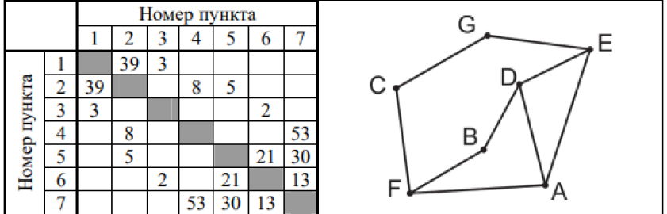
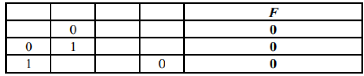
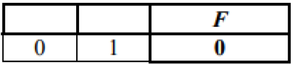
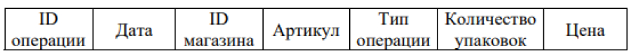
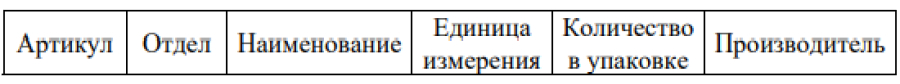
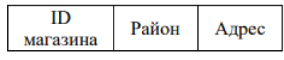
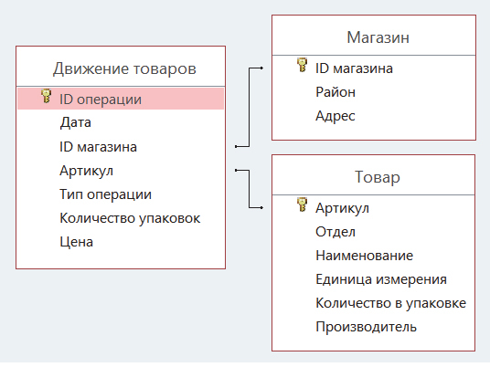
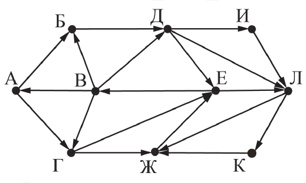
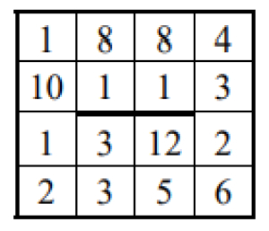
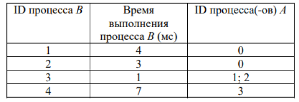

Вариант 1
-
1.
На рисунке схема дорог Н-ского района изображена в виде графа, в таблице содержатся сведения о протяжённости каждой из этих дорог (в километрах).
Так как таблицу и схему рисовали независимо друг от друга, то нумерация населённых пунктов в таблице никак не связана с буквенными обозначениями на графе. Определите, какова сумма протяжённостей дорог из пункта D в пункт B и из пункта F в пункт A.
В ответе запишите целое число. -
2.
Миша заполнял таблицу истинности логической функции F ¬ (y → x) ∨ (z → w) ∨ ¬z, но успел заполнить лишь фрагмент из трёх различных её строк, даже не указав, какому столбцу таблицы соответствует каждая из переменных w, x, y, z.
Определите, какому столбцу таблицы соответствует каждая из переменных w, x, y, z. В ответе напишите буквы w, x, y, z в том порядке, в котором идут соответствующие им столбцы (сначала буква, соответствующая первому столбцу; затем буква, соответствующая второму столбцу, и т. д.). Буквы в ответе пишите подряд, никаких разделителей между буквами ставить не нужно.

Пример. Функция F задана выражением ¬ x ∨ y, зависящим от двух переменных, а фрагмент таблицы имеет следующий видВ этом случае первому столбцу соответствует переменная y, а второму столбцу — переменная x. В ответе следует написать: yx.
-
3.
В файле приведён фрагмент базы данных «Продукты» о поставках товаров в магазины районов города. База данных состоит из трёх таблиц.
Задание триТаблица «Движение товаров» содержит записи о поставках товаров в магазины в течение первой декады июня 2021 г., а также информацию о проданных товарах. Поле Тип операции содержит значение Поступление или Продажа, а в соответствующее поле Количество упаковок, шт. занесена информация о том, сколько упаковок товара поступило в магазин или было продано в течение дня. Заголовок таблицы имеет следующий вид.
Таблица «Товар» содержит информацию об основных характеристиках каждого товара. Заголовок таблицы имеет следующий вид.
Таблица «Магазин» содержит информацию о местонахождении магазинов. Заголовок таблицы имеет следующий вид.
На рисунке приведена схема указанной базы данных.
Используя информацию из приведённой базы данных, определите общий вес (в кг) крахмала картофельного, поступившего в магазины Заречного района за период с 1 по 8 июня включительно.В ответе запишите только число.
-
4.
По каналу связи передаются сообщения, содержащие только буквы из набора: А, З, К, Н, Ч. Для передачи используется двоичный код, удовлетворяющий прямому условию Фано, согласно которому никакое кодовое слово не является началом другого кодового слова. Это условие обеспечивает возможность однозначной расшифровки закодированных сообщений. Кодовые слова для некоторых букв известны: Н — 1111, З — 110. Для трёх оставшихся букв А, К и Ч кодовые слова неизвестны.
Какое количество двоичных знаков потребуется для кодирования слова КАЗАЧКА, если известно, что оно закодировано минимально возможным количеством двоичных знаков? -
5.
На вход алгоритма подаётся натуральное число N. Алгоритм строит по нему новое число R следующим образом.
1. Строится двоичная запись числа N.
2. К этой записи дописываются справа ещё два разряда по следующему правилу:
а) если сумма цифр в двоичной записи числа чётная, то к этой записи справа дописывается 0, а затем два левых разряда заменяются на 10;
б) если сумма цифр в двоичной записи числа нечётная, то к этой записи справа дописывается 1, а затем два левых разряда заменяются на 11.
Полученная таким образом запись является двоичной записью искомого числа R.
Например, для исходного числа 610 = 1102 результатом является число 10002 = 810, а для исходного числа 410 = 1002 результатом является число 11012 = 1310.
Укажите минимальное число N, после обработки которого с помощью этого алгоритма получается число R, большее 40. В ответе запишите это число в десятичной системе счисления. -
6.
Исполнитель Черепаха действует на плоскости с декартовой системой координат. В начальный момент Черепаха находится в начале координат, её голова направлена вдоль положительного направления оси ординат, хвост опущен. При опущенном хвосте Черепаха оставляет на поле след в виде линии. В каждый конкретный момент известно положение исполнителя и направление его движения. У исполнителя существует две команды: Вперёд n (где n — целое число), вызывающая передвижение Черепахи на n единиц в том направлении, куда указывает её голова, и Направо m (где m — целое число), вызывающая изменение направления движения на m градусов по часовой стрелке.
Запись Повтори k [Команда1 Команда2 … КомандаS] означает, что последовательность из S команд повторится k раз.
Черепахе был дан для исполнения следующий алгоритм: Повтори 7 [Вперёд 10 Направо 120].
Определите, сколько точек с целочисленными координатами будут находиться внутри области, ограниченной линией, заданной данным алгоритмом. Точки на линии учитывать не следует. -
7.
Музыкальный фрагмент был записан в формате моно, оцифрован и сохранён в виде файла без использования сжатия данных. Размер полученного файла — 28 Мбайт. Затем тот же музыкальный фрагмент был записан повторно в формате стерео (двухканальная запись) и оцифрован с разрешением в 3,5 раза выше и частотой дискретизации в 2 раза меньше, чем в первый раз. Сжатие данных не производилось. Укажите размер полученного при повторной записи файла в Мбайт. В ответе запишите только целое число, единицу измерения писать не нужно.
-
8.
Определите количество пятизначных чисел, записанных в восьмеричной системе счисления, в записи которых только одна цифра 6, при этом никакая нечётная цифра не стоит рядом с цифрой 6.
-
9.
Откройте файл электронной таблицы, содержащей в каждой строке шесть натуральных чисел.
Задание 9Определите количество строк таблицы, содержащих числа, для которых выполнены оба условия:
— в строке только одно число повторяется ровно два раза, остальные числа различны;
— среднее арифметическое неповторяющихся чисел строки не больше суммы повторяющихся чисел.
В ответе запишите только число. -
10.
Текст произведения Льва Николаевича Толстого «Севастопольские рассказы» представлен в виде файлов различных форматов. Откройте один из файлов и определите, сколько раз встречается в тексте отдельное слово «теперь» со строчной буквы. Другие формы этого слова учитывать не следует. В ответе запишите только число.
Задание 10 -
11.
При регистрации в компьютерной системе каждому объекту присваивается идентификатор, состоящий из 250 символов и содержащий только десятичные цифры и символы из 1650-символьного специального алфавита. В базе данных для хранения каждого идентификатора отведено одинаковое и минимально возможное целое число байт. При этом используется посимвольное кодирование идентификаторов, все символы кодируются одинаковым и минимально возможным количеством бит.
Определите объём памяти (в Кбайт), необходимый для хранения 65 536 идентификаторов. В ответе запишите только целое число — количество Кбайт. -
12.
Исполнитель Редактор получает на вход строку цифр и преобразовывает её. Редактор может выполнять две команды, в обеих командах v и w обозначают цепочки цифр.
А) заменить (v, w).
Эта команда заменяет в строке первое слева вхождение цепочки v на цепочку w. Например, выполнение команды заменить (111, 27)
преобразует строку 05111150 в строку 0527150.
Если в строке нет вхождений цепочки v, то выполнение команды заменить (v, w) не меняет эту строку.
Б) нашлось (v).
Эта команда проверяет, встречается ли цепочка v в строке исполнителя Редактор. Если она встречается, то команда возвращает логическое значение «истина», в противном случае возвращает значение «ложь». Строка исполнителя при этом не изменяется.
Цикл
ПОКА условие
последовательность команд
КОНЕЦ ПОКА
выполняется, пока условие истинно.
В конструкции
ЕСЛИ условие
ТО команда1
ИНАЧЕ команда2
КОНЕЦ ЕСЛИ
выполняется команда1 (если условие истинно) или команда2 (если условие ложно).Дана программа для Редактора:
НАЧАЛО
ПОКА нашлось (>1) ИЛИ нашлось (>2) ИЛИ нашлось (>0)
ЕСЛИ нашлось (>1)
ТО заменить (>1, 22>)
КОНЕЦ ЕСЛИ
ЕСЛИ нашлось (>2)
ТО заменить (>2, 2>)
КОНЕЦ ЕСЛИ
ЕСЛИ нашлось (>0)
ТО заменить (>0, 1>)
КОНЕЦ ЕСЛИ
КОНЕЦ ПОКА
КОНЕЦНа вход приведённой выше программе поступает строка, начинающаяся с символа «>», а затем содержащая 39 цифр «0», n цифр «1» и 39 цифр «2», расположенных в произвольном порядке.
Определите наименьшее значение n, при котором сумма числовых значений цифр строки, получившейся в результате выполнения программы, является простым числом. -
13.
На рисунке представлена схема дорог, связывающих города А, Б, В, Г, Д, Е, Ж, И, К, Л. По каждой дороге можно двигаться только в одном направлении, указанном стрелкой.

Определите количество различных путей ненулевой длины, которые начинаются и заканчиваются в городе Е, не содержат этот город в качестве промежуточного пункта и проходят через промежуточные города не более одного раза. -
14.
Операнды арифметического выражения записаны в системе счисления с основанием 15: 123x515 + 1x23315 В записи чисел переменной x обозначена неизвестная цифра из алфавита 15-ричной системы счисления. Определите наименьшее значение x, при котором значение данного арифметического выражения кратно 14. Для найденного значения x вычислите частное от деления значения арифметического выражения на 14 и укажите его в ответе в десятичной системе счисления. Основание системы счисления в ответе указывать не нужно.
-
15.
Обозначим через ДЕЛ(n, m) утверждение «натуральное число n делится без остатка на натуральное число m».
Для какого наименьшего натурального числа А формула (ДЕЛ(x, 2) → ¬ДЕЛ(x, 3)) ∨ (x + A ≥ 100) тождественно истинна (т. е. принимает значение 1) при любом натуральном значении переменной х? -
16.
Алгоритм вычисления значения функции F(n), где n — натуральное число, задан следующими соотношениями:
F(n) = 1 при n = 1;
F(n) = n · F(n − 1), если n > 1.
Чему равно значение выражения F(2023) / F(2020)? -
17.
В файле содержится последовательность целых чисел. Элементы последовательности могут принимать целые значения от −10 000 до 10 000 включительно. Определите количество пар последовательности, в которых только одно число оканчивается на 3, а сумма квадратов элементов пары не меньше квадрата максимального элемента последовательности, оканчивающегося на 3. В ответе запишите два числа: сначала количество найденных пар, затем максимальную из сумм квадратов элементов таких пар. В данной задаче под парой подразумевается два идущих подряд элемента последовательности.
Задание 17 -
18.
Квадрат разлинован на N × N клеток (1 < N < 30). Исполнитель Робот может перемещаться по клеткам, выполняя за одно перемещение одну из двух команд: вправо или вниз. По команде вправо Робот перемещается в соседнюю правую клетку, по команде вниз — в соседнюю нижнюю. Квадрат ограничен внешними стенами. Между соседними клетками квадрата также могут быть внутренние стены. Сквозь стену Робот пройти не может. Перед каждым запуском Робота в каждой клетке квадрата лежит монета достоинством от 1 до 100. Посетив клетку, Робот забирает монету с собой; это также относится к начальной и конечной клеткам маршрута Робота.
18.xlsx
Определите максимальную и минимальную денежные суммы, которые может собрать Робот, пройдя из левой верхней клетки в правую нижнюю. В ответе укажите два числа — сначала максимальную сумму, затем минимальную.Исходные данные представляют собой электронную таблицу размером N × N, каждая ячейка которой соответствует клетке квадрата. Внутренние и внешние стены обозначены утолщенными линиями.

Пример входных данных:Для указанных входных данных ответом должна быть пара чисел 38 и 22.
-
19.
Два игрока, Петя и Ваня, играют в следующую игру. Перед игроками лежит куча камней. Игроки ходят по очереди, первый ход делает Петя. За один ход игрок может добавить в кучу один камень или увеличить количество камней в куче в два раза. Для того чтобы делать ходы, у каждого игрока есть неограниченное количество камней. Игра завершается в тот момент, когда количество камней в куче становится не менее 129. Победителем считается игрок, сделавший последний ход, т. е. первым получивший кучу из 129 или больше камней.
В начальный момент в куче было S камней, 1 ≤ S ≤ 128.
Будем говорить, что игрок имеет выигрышную стратегию, если он может выиграть при любых ходах противника.
Укажите такое значение S, при котором Петя не может выиграть за один ход, но при любом ходе Пети Ваня может выиграть своим первым ходом. -
20.
Два игрока, Петя и Ваня, играют в следующую игру. Перед игроками лежит куча камней. Игроки ходят по очереди, первый ход делает Петя. За один ход игрок может добавить в кучу один камень или увеличить количество камней в куче в два раза. Для того чтобы делать ходы, у каждого игрока есть неограниченное количество камней. Игра завершается в тот момент, когда количество камней в куче становится не менее 129. Победителем считается игрок, сделавший последний ход, т. е. первым получивший кучу из 129 или больше камней.
Найдите два наименьших значения S, при которых у Пети есть выигрышная стратегия, причём одновременно выполняются два условия:
— Петя не может выиграть за один ход;
— Петя может выиграть своим вторым ходом независимо от того, как будет ходить Ваня.
Найденные значения запишите в ответе в порядке возрастания.
-
21.
Два игрока, Петя и Ваня, играют в следующую игру. Перед игроками лежит куча камней. Игроки ходят по очереди, первый ход делает Петя. За один ход игрок может добавить в кучу один камень или увеличить количество камней в куче в два раза. Для того чтобы делать ходы, у каждого игрока есть неограниченное количество камней. Игра завершается в тот момент, когда количество камней в куче становится не менее 129. Победителем считается игрок, сделавший последний ход, т. е. первым получивший кучу из 129 или больше камней.
В начальный момент в куче было S камней, 1 ≤ S ≤ 128.
Будем говорить, что игрок имеет выигрышную стратегию, если он может выиграть при любых ходах противника.
Найдите минимальное значение S, при котором одновременно выполняются два условия:
— у Вани есть выигрышная стратегия, позволяющая ему выиграть первым или вторым ходом при любой игре Пети;
— у Вани нет стратегии, которая позволит ему гарантированно выиграть первым ходом.
Если найдено несколько значений S, в ответе запишите минимальное из них. -
22.
В файле содержится информация о совокупности N вычислительных процессов, которые могут выполняться параллельно или последовательно. Будем говорить, что процесс B зависит от процесса A, если для выполнения процесса B необходимы результаты выполнения процесса A. В этом случае процессы могут выполняться только последовательно.

Информация о процессах представлена в файле в виде таблицы. В первом столбце таблицы указан идентификатор процесса (ID), во втором столбце таблицы — время его выполнения в миллисекундах, в третьем столбце перечислены с разделителем «;» ID процессов, от которых зависит данный процесс. Если процесс является независимым, то в таблице указано значение 0.
Типовой пример организации данных в файле:Определите минимальное время, через которое завершится выполнение всей совокупности процессов, при условии, что все независимые друг от друга процессы могут выполняться параллельно.
Задание 22
Выполните задания, используя данные из файла ниже: -
23.
Исполнитель преобразует число на экране. У исполнителя есть две команды, которым присвоены номера:
1. Прибавить 1
2. Умножить на 2
Программа для исполнителя — это последовательность команд.
Сколько существует программ, для которых при исходном числе 1 результатом является число 35, при этом траектория вычислений содержит число 10 и не содержит 17?
Траектория вычислений программы — это последовательность результатов выполнения всех команд программы. Например, для программы 121 при исходном числе 7 траектория будет состоять из чисел 8, 16, 17. -
24.
Текстовый файл состоит из символов A, C, D, F и O.
24.txt
Определите максимальное количество идущих подряд пар символов вида согласная + гласная. Для выполнения этого задания следует написать программу. -
25.
Назовём маской числа последовательность цифр, в которой также могут встречаться следующие символы:
— символ «?» означает ровно одну произвольную цифру;
— символ «*» означает любую последовательность цифр произвольной длины; в том числе «*» может задавать и пустую последовательность.
Например, маске 123*4?5 соответствуют числа 123405 и 12300405.
Среди натуральных чисел, не превышающих 1010, найдите все числа, соответствующие маске 1?2139*4, делящиеся на 2023 без остатка. В ответе запишите в первом столбце таблицы все найденные числа в порядке возрастания, а во втором столбце — соответствующие им результаты деления этих чисел на 2023. -
26.
В магазине для упаковки подарков есть N кубических коробок. Самой интересной считается упаковка подарка по принципу матрёшки — подарок упаковывается в одну из коробок, та в свою очередь в другую коробку и т. д. Одну коробку можно поместить в другую, если длина её стороны хотя бы на 3 единицы меньше длины стороны другой коробки.
Задание 26
Определите наибольшее количество коробок, которое можно использовать для упаковки одного подарка, и максимально возможную длину стороны самой маленькой коробки, где будет находиться подарок. Размер подарка позволяет поместить его в самую маленькую коробку.
Входные данные.В первой строке входного файла находится число N — количество коробок в магазине (натуральное число, не превышающее 10 000). В следующих N строках находятся значения длин сторон коробок (все числа натуральные, не превышающие 10 000), каждое — в отдельной строке.
Запишите в ответе два целых числа: сначала наибольшее количество коробок, которое можно использовать для упаковки одного подарка, затем максимально возможную длину стороны самой маленькой коробки в таком наборе.
Пример входного файла:
5
43
40
32
40
30
Пример входного файла приведён для пяти коробок и случая, когда минимальная допустимая разница между длинами сторон коробок, подходящих для упаковки «матрёшкой», составляет 3 единицы.
При таких исходных данных условию задачи удовлетворяют наборы коробок с длинами сторон 30, 40 и 43 или 32, 40 и 43 соответственно, т. е. количество коробок равно 3, а длина стороны самой маленькой коробки равна 32. -
27.
У медицинской компании есть N пунктов приёма биоматериалов на анализ. Все пункты расположены вдоль автомагистрали и имеют номера, соответствующие расстоянию от нулевой отметки до конкретного пункта. Известно количество пробирок, которое ежедневно принимают в каждом из пунктов. Пробирки перевозят в специальных транспортировочных контейнерах вместимостью не более 36 штук. Каждый транспортировочный контейнер упаковывается в пункте приёма и вскрывается только в лаборатории.
Файл A Файл B
Стоимость перевозки биоматериалов равна произведению расстояния от пункта до лаборатории на количество контейнеров с пробирками. Общая стоимость перевозки за день равна сумме стоимостей перевозок из каждого пункта в лабораторию. Лабораторию расположили в одном из пунктов приёма биоматериалов таким образом, что общая стоимость доставки биоматериалов из всех пунктов минимальна.
Определите минимальную общую стоимость доставки биоматериалов из всех пунктов приёма в лабораторию.
Входные данныеДано два входных файла (файл A и файл B), каждый из которых в первой строке содержит число N (1 ≤ N ≤ 10 000 000) — количество пунктов приёма биоматериалов. В каждой из следующих N строк находится два числа: номер пункта и количество пробирок в этом пункте (все числа натуральные, количество пробирок в каждом пункте не превышает 1000). Пункты перечислены в порядке их расположения вдоль дороги, начиная от нулевой отметки.
В ответе укажите два числа: сначала значение искомой величины для файла А, затем — для файла B.
Пример организации исходных данных во входном файле:
6
1 100
2 200
5 4
7 3
8 2
10 190
При таких исходных данных и вместимости транспортировочного контейнера, составляющей 96 пробирок, компании выгодно открыть лабораторию в пункте 2. В этом случае сумма транспортных затрат составит:
1 · 2 + 3 · 1 + 5 · 1 + 6 · 1 + 8 · 2.
Предупреждение: для обработки файла B не следует использовать переборный алгоритм, вычисляющий сумму для всех возможных вариантов, поскольку написанная по такому алгоритму программа будет выполняться слишком долго.